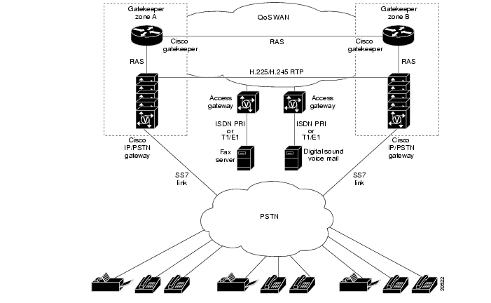

A távközlés alapvetően nagy távolságra történő kommunikációt jelent, már az Ókori Egyiptomban is jelen volt a távközlés egy formája, jelentős szerepet játszottak az információk átadók, azaz a hírvivők hálózata. Kicsit nagyobbat ugorva az időben, 1837-ben Morse kifejlesztette a távírást, majd 1876-ban Bell feltalálta a vezetékes telefon rendszert. A hívások egy kézi távbeszélőközpontba futottak be és onnan kapcsolták a hívásokat. A klasszikus telefonhálózatokat 3 fő részletre lehet bonthatani:
A PSTN mozaikszó annyit jelent, hogy Public Switched Telephone Network, ami egy hagyományos áramkörkapcsolt telefonhálózat és magában foglalja a világ összes olyan kapcsolt telefonhálózatát, amely helyi, nemzeti vagy nemzetközi szolgáltatók üzemeltetnek. Ezek a hálózatok biztosítják a nyilvános távközléshez szükséges infrastruktúrát. A PSTN lehetővé teszi a felhasználóknak, hogy vezetékes telefonhívásokat kezdeményezzenek egymással.
Hierarchikus architektúrával és csillagszerkezettel rendelkezik, így biztosítva a redundáns összekapcsolásokat a központokkal. Az előfizetői vonalak egy helyi központhoz csatlakoznak, ami kommunikál a primer, szekunder és nemzeti központokkal is. Egy primer központnak saját körzet száma van, például 72-es körzet szám Pécshez tartozik. Így tudjuk azonosítani, hogy melyik központ fogadja majd a hívást. Az internet korai szakaszában a PSTN hálózaton keresztül lehetett otthoni internet előfizetést rendeli, mivel a rendszer a telefonvonalakon képes volt internet kapcsolásokra is 56 Kb/s limitig.
Kihelyezett fokozat: Költséghatékonyság szempontjából vannak kialakítva és azt a célt szolgálják, hogy önálló kapcsolásokat létesítsen. így kevesebb kábel kell a kialakításhoz.
Nemzetközi telefonhálózat: Kicserélőközpontokból állnak amik szorosan össze vannak kötve egymással és csak átmenő forgalmat generálnak.
Az NGN, azaz Next Generation Network egy 2004-es koncepción alapul és még a mai napig tart a bevezetése. Az alap ötlet, hogy :
Az NGN szolgáltatásokra jellemzői:
Ezek a rétegek lehetővé teszik, hogy a fejlesztések a hálózaton függetlenül tudjanak történni.
A VoIP, azaz az internetprotokoll feletti hangátvitel, ahol az IP alapú gerinchálózat segítségével (NGN) az interneten vagy más IP alapú hálózaton keresztül beszélgetéseket folytathatunk.
4 fő funkciója létezik:
Példa egy H.323-es architektúrájú VoIP hálózatra:
További info és magyarázatt itt
https://hu.wikipedia.org/wiki/Voice_over_IP
http://www.hit.bme.hu/~jakab/edu/HA16/02_HA15_NGN_arch.pdf